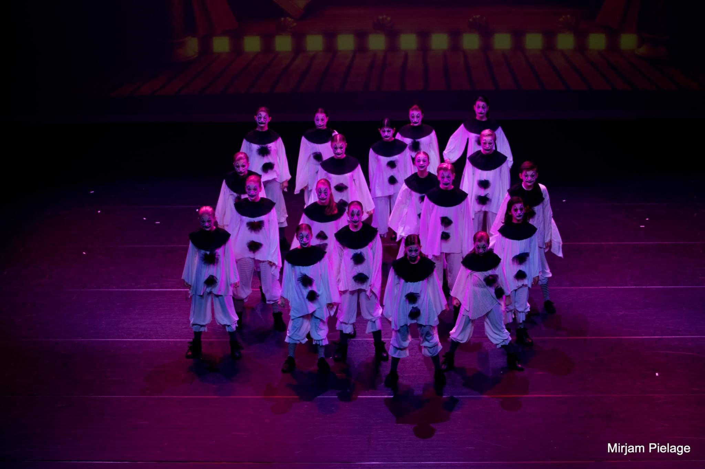

Optredens
Bruijn Bonel
Die opwindende dag dat ik, op negenjarige leeftijd, voor het eerst op het podium stond, zal altijd in mijn geheugen gegrift blijven staan. Het podium, verlicht door de schittering van de spotlights, stond klaar om mij en mijn mededansers te verwelkomen. Ik voelde een mix van zenuwen en opwinding terwijl ik me voorbereidde om mijn passie voor dans te delen met het publiek.
Het nummer 'Party Rock Anthem' van LMFAO speelde af, de aanstekelijke beat vulde de ruimte en voerde de spanning op. Mijn Hip Hop-groep stond klaar in positie, vol energie en vastberaden om een geweldige show neer te zetten. De opzwepende muziek zorgde ervoor dat de adrenaline door onze aderen gierde, klaar om te laten zien wat wij hadden ingestudeerd.
Dentro
Bij Dentro heb ik talloze kansen gehad om mijn danspassie te uiten door middel van optredens.
Een van de meest memorabele optredens was ongetwijfeld mijn eerste keer op het Kuub Festival in Alkmaar. Dit festival was een bruisende en levendige omgeving, doordrenkt met de creatieve energie van kunst en cultuur.
Wij waren zoals je ziet in de foto gekleed in legerprint.
Dentro
Bij Dentro dansten wij vaak in het Cool Theater in Heerhugowaard. Ik ken dit theater van binnen en buiten.
Een van die speciale optredens was het onvergetelijke moment waarop wij als groep in clownspakken dansten op het ritme van 'Alors en danse' van Stromae. De kleurrijke clownspakken voegden een speels en komisch element toe aan onze dans, waardoor het publiek meteen werd meegenomen in de vrolijke ambiance van het optreden.
Het gekozen nummer, 'Alors en danse' van Stromae, was zeker een uitdaging. Met zijn opzwepende beats en aanstekelijke melodie bracht het de juiste dosis energie om jullie clowneske interpretatie tot leven te wekken. Dansen in clownspakken vereist niet alleen technische precisie, maar ook het vermogen om de persoonlijkheid van een clown uit te stralen, om het publiek te vermaken en te laten glimlachen.